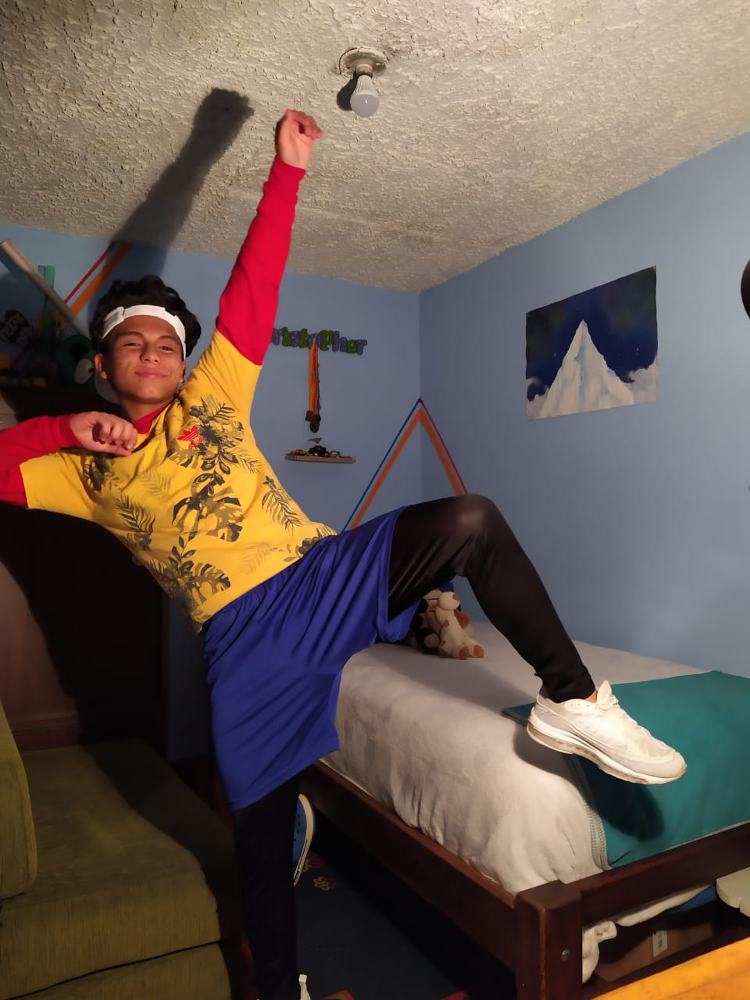

Just Dance Now
Diviertete y baila.
Diviertete y baila.
Es un juego de baile en el que podéis disfrutar de 40 canciones de grupos tanto actuales como clásicos, haciendo que sea un título recomendado para todo tipo de públicos e ideal para disfrutarse en compañía. Llega para celebrar los 10 años de la franquicia Just Dance, incluyendo modos para todos los gustos, un registro para ver las calorías que quemamos y la posibilidad de suscribirse al servicio Just Dance Unlimited, que nos da acceso a más de 500 canciones de forma instantánea. Además, Ubisoft ha vuelto a colaborar con varios estudios para dar vida a las canciones, contando siempre con bailarines que nos indican los pasos que debemos seguir.
ANÍMATE Y PARTICIPA, uno de los mejores intercursos con apoyo de Cristopher Rodriguez.
